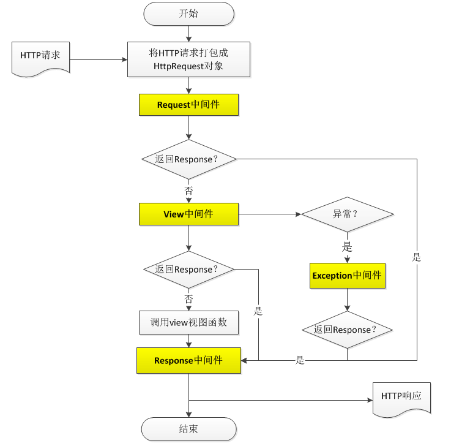

Django视图
什么是视图
视图，是一个简单的Python 函数/类，它接受Web请求并且返回Web响应。可响应的内容：
- 网页的HTML内容
- 重定向
- 404错误
- XML文档
- 图片
- 是任何东西都可以
无论视图本身包含什么逻辑，都要返回响应。为了将代码放在某处，约定是将视图放置在项目或应用程序目录中的名为views.py的文件中。
一个简单视图
1 | from django.shortcuts import HttpResponse |
代码说明：
- 导入HttpResponse
- 定义demo01函数，参数有1个名为request
- 返回一个HttpResponse对象
注意：
视图函数的名称并不重要，命名规则同变量
每个视图函数都负责返回一个HttpResponse对象
Request/Response处理流程的分析
熟悉HttpRequest与HttpResponse工作方式

Django-Request对象字段值
HttpRequest是什么
HTTP 应用的信息是通过请求报文和响应报文传递的，关于更多的相关知识，可以阅读《HTTP权威指南》获得。
HttpRequest对象表示来自某客户端的一个单独的HTTP请求。HttpRequest对象是 Django自动创建的。
其中请求报文由客户端发送，其中包含和许多的信息，而 django 将这些信息封装成了 HttpRequest 对象，该对象由 HttpRequest 类创建。
每一个请求都会生成一个 HttpRequest 对象，django会将这个对象自动传递给响应的视图函数，一般视图函数约定俗成地使用 request 参数承接这个对象。当然你也可以使用其他参数来承接这个对象，并没有硬性规定一定要使用什么名称。
HttpRequest属性
django将请求报文中的请求行、首部信息、内容主体封装成 HttpRequest 类中的属性。除了特殊说明的之外，其他均为只读的。
打上断点，并以Debug模式运行Django。访问对应的URL，查看Request的属性
HttpRequest.scheme一个字符串，代表请求的方案，一般为 ‘http’ 或 ‘https’。
HttpRequest.body一个字符串，代表请求报文的主体。在处理非 HTTP 形式的报文时非常有用，例如：二进制图片、XML等。
但是，如果要处理表单数据的时候，推荐还是使用 HttpRequest.POST 。
另外，我们还可以用 python 的类文件方法去操作它，详情参考 HttpRequest.read() 。
HttpRequest.path一个字符串，表示请求的路径组件（不含域名）。
例如：”/music/bands/the_beatles/“
HttpRequest.path_info一个字符串，在某些 Web 服务器配置下，主机名后的 URL 部分被分成脚本前缀部分和路径信息部分。path_info 属性将始终包含路径信息部分，不论使用的Web 服务器是什么。使用它代替 path 可以让代码在测试和开发环境中更容易地切换。
例如，如果应用的WSGIScriptAlias 设置为”/minfo”，那么当 path 是”/minfo/music/bands/the_beatles/“ 时path_info 将是”/music/bands/the_beatles/“。
HttpRequest.method一个字符串，表示请求使用的HTTP 方法。必须使用大写。
例如：”GET”、”POST”
HttpRequest.encoding一个字符串，表示提交的数据的编码方式（如果为 None 则表示使用 DEFAULT_CHARSET 的设置，默认为 ‘utf-8’）。这个属性是可写的，你可以修改它来修改访问表单数据使用的编码。接下来对属性的任何访问（例如从 GET 或 POST 中读取数据）将使用新的 encoding 值。如果你知道表单数据的编码不是 DEFAULT_CHARSET ，则使用它。
HttpRequest.GET一个类似于字典的对象，包含 HTTP GET 的所有参数。详情请参考 QueryDict 对象。
HttpRequest.POST一个类似于字典的对象，如果请求中包含表单数据，则将这些数据封装成 QueryDict 对象。
POST 请求可以带有空的 POST 字典 —— 如果通过 HTTP POST 方法发送一个表单，但是表单中没有任何的数据，QueryDict 对象依然会被创建。因此，不应该使用 if request.POST 来检查使用的是否是POST 方法；应该使用 if request.method == “POST”
另外：如果使用 POST 上传文件的话，文件信息将包含在 FILES 属性中。
HttpRequest.REQUEST一个类似于字典的对象，它首先搜索POST，然后搜索GET，主要是为了方便。灵感来自于PHP 的
$_REQUEST。例如，如果 GET = {“name”: “john”} 而 POST = {“age”: ‘34’} ， REQUEST[“name”] 将等于”john”， REQUEST[“age”] 将等于”34”。
强烈建议使用 GET 和 POST 而不要用REQUEST，因为它们更加明确。
HttpRequest.COOKIES一个标准的Python 字典，包含所有的cookie。键和值都为字符串。(放在Header中)
HttpRequest.FILES一个类似于字典的对象，包含所有的上传文件信息。FILES 中的每个键为
<input type="file" name="" />中的name，值则为对应的数据。注意，FILES 只有在请求的方法为POST且提交的
<form>带有enctype="multipart/form-data"的情况下才会包含数据。否则，FILES 将为一个空的类似于字典的对象。
HttpRequest.META一个标准的Python 字典，包含所有的HTTP 首部。具体的头部信息取决于客户端和服务器，下面是一些示例：
- CONTENT_LENGTH —— 请求的正文的长度（是一个字符串）。
- CONTENT_TYPE —— 请求的正文的MIME 类型。
- HTTP_ACCEPT —— 响应可接收的Content-Type。
- HTTP_ACCEPT_ENCODING —— 响应可接收的编码。
- HTTP_ACCEPT_LANGUAGE —— 响应可接收的语言。
- HTTP_HOST —— 客服端发送的HTTP Host 头部。
- HTTP_REFERER —— Referring 页面。
- HTTP_USER_AGENT —— 客户端的user-agent 字符串。
- QUERY_STRING —— 单个字符串形式的查询字符串（未解析过的形式）。
- REMOTE_ADDR —— 客户端的IP 地址。
- REMOTE_HOST —— 客户端的主机名。
- REMOTE_USER —— 服务器认证后的用户。
- REQUEST_METHOD —— 一个字符串，例如”GET” 或”POST”。
- SERVER_NAME —— 服务器的主机名。
- SERVER_PORT —— 服务器的端口（是一个字符串）。
从上面可以看到，除
和 ```CONTENT_TYPE``` 之外，请求中的任何 HTTP 首部转换为 META 的键时，都会将所有字母大写并将连接符替换为下划线最后加上```HTTP_```前缀。所以，一个叫做```X-Bender```的头部将转换成 META 中的```HTTP_X_BENDER```键。 1
2
3
4
5
6
7
8
9
* `HttpRequest.user`
一个 AUTH_USER_MODEL 类型的对象，表示当前登录的用户。
如果用户当前没有登录，user 将设置为```django.contrib.auth.models.AnonymousUser```的一个实例。你可以通过 is_authenticated() 区分它们。
例如：
if request.user.is_authenticated():
# Do something for logged-in users. else:
# Do something for anonymous users.1 | user 只有当Django 启用 AuthenticationMiddleware 中间件时才可用。 |
django.contrib.auth.models.AnonymousUser 类实现了django.contrib.auth.models.User 接口，但具有下面几个不同点：
1 | id 永远为None。 |
HttpRequest.session一个既可读又可写的类似于字典的对象，表示当前的会话。只有当Django 启用会话的支持时才可用。完整的细节参见会话的文档。
HttpRequest.urlconf不是由Django 自身定义的，但是如果其它代码（例如，自定义的中间件类）设置了它，Django 就会读取它。如果存在，它将用来作为当前的请求的Root URLconf，并覆盖 ROOT_URLCONF 设置。
HttpRequest.resolver_match一个 ResolverMatch 的实例，表示解析后的URL。这个属性只有在 URL 解析方法之后才设置，这意味着它在所有的视图中可以访问，但是在 URL 解析发生之前执行的中间件方法中不可以访问（比如process_request，但你可以使用 process_view 代替）。
HttpRequest.get_host()根据从HTTP_X_FORWARDED_HOST（如果打开 USE_X_FORWARDED_HOST，默认为False）和 HTTP_HOST 头部信息返回请求的原始主机。如果这两个头部没有提供相应的值，则使用SERVER_NAME 和SERVER_PORT，在PEP 3333 中有详细描述。
USE_X_FORWARDED_HOST：一个布尔值，用于指定是否优先使用 X-Forwarded-Host 首部，仅在代理设置了该首部的情况下，才可以被使用。
例如：”127.0.0.1:8000”
注意：当主机位于多个代理后面时，get_host() 方法将会失败。除非使用中间件重写代理的首部。
HttpRequest.get_full_path()返回 path，如果可以将加上查询字符串。
例如：”/music/bands/the_beatles/?print=true”
HttpRequest.build_absolute_uri(location)返回location 的绝对URI。如果location 没有提供，则使用request.get_full_path()的返回值。
如果URI 已经是一个绝对的URI，将不会修改。否则，使用请求中的服务器相关的变量构建绝对URI。
HttpRequest.get_signed_cookie(key, default=RAISE_ERROR, salt='', max_age=None)返回签名过的Cookie 对应的值，如果签名不再合法则返回django.core.signing.BadSignature。
如果提供 default 参数，将不会引发异常并返回 default 的值。
可选参数salt 可以用来对安全密钥强力攻击提供额外的保护。max_age 参数用于检查Cookie 对应的时间戳以确保Cookie 的时间不会超过max_age 秒。
1 | request.get_signed_cookie('name') |
HttpRequest.is_secure()如果请求时是安全的，则返回True；即请求通是过 HTTPS 发起的。
HttpRequest.is_ajax()如果请求是通过XMLHttpRequest 发起的，则返回True，方法是检查 HTTP_X_REQUESTED_WITH 相应的首部是否是字符串’XMLHttpRequest’。
大部分现代的 JavaScript 库都会发送这个头部。如果你编写自己的 XMLHttpRequest 调用（在浏览器端），你必须手工设置这个值来让 is_ajax() 可以工作。
如果一个响应需要根据请求是否是通过AJAX 发起的，并且你正在使用某种形式的缓存例如Django 的 cache middleware， 你应该使用 vary_on_headers(‘HTTP_X_REQUESTED_WITH’) 装饰你的视图以让响应能够正确地缓存。
HttpRequest.read(size=None)像文件一样读取请求报文的内容主体，同样的，还有以下方法可用。
1 | # 其行为和文件操作中的一样。 |
HttpRequest.__iter__()说明可以使用 for 的方式迭代文件的每一行。
参考资料
https://www.cnblogs.com/scolia/archive/2016/07/01/5633351.html
Django快捷返回方式 (HttpResponse)
官方文档：https://docs.djangoproject.com/en/1.11/topics/http/shortcuts/
Request 和 Response 对象起到了服务器与客户机之间的信息传递作用。Request对象用于接收客户端浏览器提交的数据，而Response 对象的功能则是将服务器端的数据发送到客户端浏览器。
每一个视图都需要一个返回（必须是一个Response对象）, 一个Response对象需要包含：
- 指定响应内容
- 响应格式
- 设置cookies
HttpResponse：返回一个内容
1 | # request 必填，名字可以修改，封装了用户请求的所有内容 |
render: 结合一个给定的模板和一个给定的上下文字典，并返回一个渲染后的 HttpResponse 对象。
1 | render(request, template_name[, context][, context_instance][, content_type][, status][, current_app][, dirs][, using]) |
必选的参数
request: 该request用于生成responsetemplate_name: 要使用的模板的完整名称或者模板名称的一个序列。
可选的参数
context: 添加到模板上下文的一个字典。super如果字典中的某个值是可调用的，视图将在渲染模板之前调用它。content_type: 生成的文档要使用的MIME 类型。默认为设置的值。 1
2
3* `status`: 响应的状态码。默认为200。
* 使用示例：下面的示例渲染模板myapp/index.html，MIME 类型为application/xhtml+xml：
from django.shortcuts import render
def my_view(request):View code here…
return render(request, ‘myapp/index.html’, {“foo”: “bar”},
content_type=”application/xhtml+xml”, status=301)1
2
#### ```render_to_response
1 | render_to_response(template_name[, context][, context_instance][, content_type][, status][, dirs][, using]) |
结合一个给定的模板和一个给定的上下文字典，并返回一个渲染后的 HttpResponse 对象。
必选的参数
要使用的模板的完整名称或者模板名称的一个序列。 1
2
* 使用示例：下面的示例渲染模板myapp/index.html，MIME 类型为application/xhtml+xml：
from django.shortcuts import render_to_response
def my_view(request):# View code here... return render_to_response('myapp/index.html', {"foo": "bar"}, content_type="application/xhtml+xml")1
2
#### redirectredirect(to, [permanent=False, ]*args, `kwargs)
1
2
3
4
5
6
7
8
9
10
为传递进来的参数返回HttpResponseRedirect 给正确的URL
* 参数可以是：
一个模型：将调用模型的```get_absolute_url()``` 函数
一个视图，可以带有参数：将使用```urlresolvers.reverse``` 来反向解析名称
一个绝对的或相对的URL，将原封不动的作为重定向的位置。
* 使用示例：
from django.shortcuts import redirect
def my_view(request):
…
object = MyModel.objects.get(…)
# 通过传递一个对象；将调用get_absolute_url() 方法来获取重定向的URL
return redirect(object)
# 通过传递一个视图的名称，可以带有位置参数和关键字参数；将使用reverse() 方法反向解析URL
return redirect('some-view-name', foo='bar')
# 传递要重定向的一个硬编码的URL
return redirect('/some/url/')
# 一个完整的URL
return redirect('http://example.com/')1 |
|
from django.shortcuts import render, HttpResponse, redirect, Http404
def index(request)
# 触发一个404错误
raise Http404('not exist')
return HttpResponse('I am index')1 |
|
myblogsettings.py
DEBUG = False
ALLOWED_HOSTS = [‘127.0.0.1’, ‘localhost’]
1 |
|
get_object_or_404(klass, *args, `kwargs)
1 | 在一个给定的模型管理器上调用get()，但是引发Http404 而不是模型的DoesNotExist 异常。 |
from django.shortcuts import get_object_or_404
def my_view(request):
my_object = get_object_or_404(MyModel, pk=1)
return xxx
这个示例等同于：
from django.http import Http404
def my_view(request):
try:
my_object = MyModel.objects.get(pk=1)
except MyModel.DoesNotExist:
raise Http404(“No MyModel matches the given query.”)
return xxx
1 |
|
queryset = Book.objects.filter(title__startswith=’M’)
get_object_or_404(queryset, pk=1)
1 |
|
get_object_or_404(Book.dahl_objects, title=’Matilda’)
1 |
|
author = Author.objects.get(name=’Roald Dahl’)
get_object_or_404(author.book_set, title=’Matilda’)
1 |
|
get_list_or_404(klass, *args, `kwargs)[source]
1 | 返回一个给定模型管理器上filter() 的结果，并将结果映射为一个列表，如果结果为空则返回Http404。 |
from django.shortcuts import get_list_or_404
def my_view(request):
my_objects = get_list_or_404(MyModel, published=True)
这个示例等同于：
from django.http import Http404
def my_view(request):
my_objects = list(MyModel.objects.filter(published=True))
if not my_objects:
raise Http404(“No MyModel matches the given query.”)
1 |
|
def index(request):
return HttpResponse(‘hello world!’)
def index(request):
result = {‘demo’:’demo’}
return render(request, ‘blog/about.html’, result)
def index(request):
result = {‘demo’:’demo’}
return render_to_response(‘blog/about.html’, result)
```
基于函数的视图的问题在于，虽然它们很好地覆盖了简单的情形，但是不能扩展或自定义它们，即使是一些简单的配置选项，这让它们在现实应用中受到很多限制。基于类的通用视图然后应运而生，目的与基于函数的通用视图一样，就是为了使得视图的开发更加容易。
django 基本类视图分为四类：
基础类视图：
View
TemplateView
RedirectView展示类视图：(get)
DetailView
ListView编辑类视图：
FormView
CreateView
UpdateView
DeleteView日期类视图：
ArchiveIndexView
YearArchiveView
MonthArchiveView
WeekArchiveView
DayArchiveView
TodayArchiveView
DateDetailView
下面三个是最常使用的基于类的通用视图：
TemplateView，View，ListView，DetailView